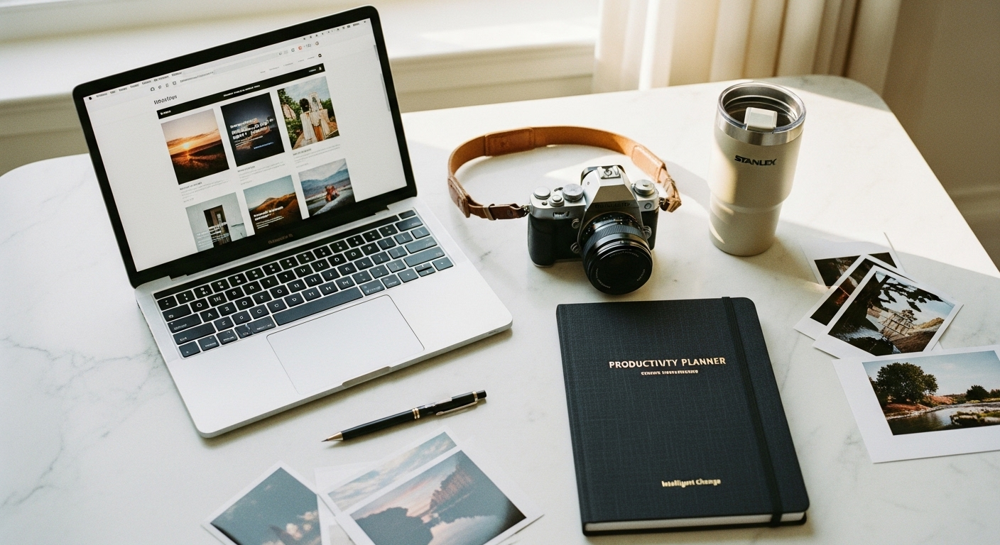

website template for photographer

WEBSITE TEMPLATE FOR PHOTOGRAPHER: HOW TO CHOOSE ONE THAT ACTUALLY BOOKS CLIENTS
You have incredible images. Your portfolio speaks for itself. But when a potential client lands on your website, they leave without reaching out.
This happens constantly to talented photographers. The problem is almost never the work - it's the website.
A website template for photographer portfolios needs to do more than display images beautifully. It needs to guide visitors toward one action: getting in touch. Most templates prioritize aesthetics over function. They look stunning in the demo but fail the moment a real client tries to figure out how to book you.
I've seen this pattern hundreds of times working with photographers over the past decade. The photographer with mediocre images but a clear, easy-to-navigate website books more clients than the one with award-winning work buried in a confusing layout.
Your website is not a gallery. It's a sales page with pictures.
The good news? Fixing this does not require a custom design or a huge budget. It requires choosing the right template and setting it up with intention.
WHY MOST PHOTOGRAPHER WEBSITES LOSE CLIENTS
The same mistakes appear on photographer websites constantly. Recognizing them is the first step toward fixing them.
Slow load times kill conversions. Photographers upload full-resolution images directly from their editing software. The homepage takes eight seconds to load on mobile. The visitor is gone before they see your best work.
No clear path to contact. The visitor lands on a homepage, clicks through fifteen gallery images, gets lost in a dropdown menu, and eventually gives up trying to find the contact page. Every extra click loses a percentage of potential clients.
Mobile looks like an afterthought. Most of your visitors will find you on their phone. If they have to pinch and zoom to read your pricing or if the menu covers half the screen, you look unprofessional - regardless of how good your photos are.
When was the last time you looked at your own website on your phone as if you were a stranger trying to book a photographer?
Too many options, no focus. Wedding photography, family portraits, commercial work, headshots, events - all listed with equal weight. The visitor cannot tell who you actually serve or whether you are the right fit for them.
A website template for photographer portfolios should solve these problems out of the box. Most templates create them instead.
WHAT TO LOOK FOR IN A WEBSITE TEMPLATE FOR PHOTOGRAPHER
Before you browse templates based on how they look, filter based on what they do. Here is what actually matters:
Speed and image optimization built in. The template should handle image compression automatically or include clear guidance on upload sizes. Ask yourself: does this platform make it easy to have fast-loading galleries, or will I need to manually resize every image?
One-click navigation to contact. Look at the template demo. Can you get from the homepage to the contact page in one click? Is the contact button visible on every page without scrolling? If not, move on.
Mobile-first design. Open every template demo on your phone before considering it. The mobile version should feel intentional - not like a squished desktop site. Text should be readable without zooming. Buttons should be easy to tap.
A layout that guides, not just displays. The best photographer website templates use visual hierarchy to move visitors through a journey: introduction, proof of quality (portfolio), social proof (testimonials), and clear action (contact or inquiry form).
A beautiful template that makes booking difficult will always lose to an average template that makes booking obvious.
THE SECTIONS EVERY PHOTOGRAPHER WEBSITE NEEDS
Templates vary in structure, but the highest-converting photographer websites include these elements:
- A clear homepage headline that tells visitors exactly who you photograph and where
- A curated portfolio - your twelve best images, not your hundred favorite ones
- An about page that builds trust and connection (clients book people, not just photographers)
- Testimonials or reviews visible without hunting for them
- Pricing information or starting rates - even a general range reduces tire-kicker inquiries
- A contact page that loads fast with a simple form
Many photographers resist including pricing. Here is the reality: clients who cannot find pricing often assume you are out of their budget and leave. A simple "weddings start at $X" line qualifies leads before they reach out. You spend less time on inquiries that go nowhere.
Your about page matters more than you think. Clients choosing between three photographers with similar portfolios often book the one they feel they know. Include a photo of yourself. Write in first person. Mention something that makes you memorable. (Not your camera gear - nobody except other photographers cares about that.)
WIX VS. OTHER PLATFORMS: WHAT WORKS FOR PHOTOGRAPHERS
Photographers typically choose between Squarespace, Showit, WordPress, and Wix. Each has tradeoffs.
Squarespace has a reputation for clean aesthetics, but customization is limited. You get what the template offers - changing the layout requires workarounds. For photographers who want simple and are fine with templates that look similar to thousands of other photographer sites, it works.
Showit offers drag-and-drop flexibility but has a steeper learning curve and higher costs. If you enjoy designing and have time to invest, it can produce unique results.
WordPress with a good theme offers maximum control but requires maintenance. Plugin updates, security patches, hosting management - these become your responsibility.
Wix hits a middle ground that works for most photographers. The editor is intuitive. Mobile and desktop versions are editable separately (so you can fix mobile issues without breaking the desktop layout). SEO tools are built in. And templates range from simple portfolios to full client-booking systems.
I design Wix website templates specifically for service-based businesses because the platform makes professional results accessible without requiring design skills or ongoing developer costs.
If you want a website template for photographer portfolios that is ready to customize without starting from scratch, the [3-in-1 business bundle](https://switzertemplates.com) includes a complete Wix website template alongside a branding kit and landing page - everything you need to present yourself professionally across every platform.
CUSTOMIZING YOUR TEMPLATE WITHOUT BREAKING IT
You found a solid template. Now you need to make it yours without destroying what makes it work.
Start with your copy, not your colors. The words on your website matter more than the fonts. Write your homepage headline first. Write your about page. Write your service descriptions. Then adjust the design to fit the content - not the other way around.
Limit your portfolio to your best work. I know it hurts to leave out images you love. But a visitor scrolling through fifty photos will remember none of them. A visitor looking at fifteen exceptional images will remember the overall impression: this photographer is consistently excellent.
Use your brand colors sparingly. One accent color for buttons and links. One or two neutrals for backgrounds and text. Photographers often make the mistake of letting their images compete with colorful design elements. Your photos should be the only visual stars on the page.
Test every change on mobile. After any edit, pull up the mobile version. Check that text is readable, buttons are tappable, and nothing looks broken. This takes thirty seconds and prevents embarrassing client experiences.
Here is a simple rule: if a change makes the template look fancier but makes the user experience worse, undo it.
HOW TO MAKE YOUR PHOTOGRAPHER WEBSITE RANK ON GOOGLE
A beautiful website means nothing if nobody finds it. Local SEO matters for photographers more than almost any other service business.
Include your location everywhere it fits naturally. Your homepage headline should mention your city or region. Your about page should mention where you are based. Your portfolio page titles should include location when relevant ("Austin Wedding Photography Portfolio" rather than "Portfolio").
Write alt text for every image. This is the text that describes your images to search engines (and to visually impaired visitors using screen readers). Instead of "IMG_4582.jpg", write "bride and groom first dance at Barton Creek Country Club Austin Texas wedding."
Create separate pages for each service you offer. "Austin Wedding Photographer" and "Austin Family Photographer" should be separate pages if you offer both services. This gives Google clear signals about what you do and where.
Blog when you can, but only if it is useful. A blog with real wedding features (venue name, location, vendor credits) can rank for specific venue searches. "The Driskill Hotel Wedding Photography" might bring you clients searching for photographers familiar with that venue. But a blog with generic posts like "5 Tips for Wedding Day Timeline" will not outrank the hundreds of identical articles already published.
Your SEO goal is not to rank for "photographer" - it is to rank for "photographer + your city + your specialty."
WHAT TO DO THIS WEEK
If your current website is not booking clients, start here:
- Open your website on your phone and time how long it takes to find the contact page
- Ask a friend who has never seen your site to describe what you do and where - based only on your homepage
- Count how many images are on your main portfolio page and cut it to fifteen or fewer
- Check your about page - is there a photo of you? Does it read like a human wrote it?
- Add your city to your homepage headline if it is not already there
These changes take an afternoon and will produce more results than spending three months picking fonts.
A website template for photographer portfolios is only a starting point. What makes it work is how you set it up - with clear navigation, focused content, and one obvious action for visitors to take.
If you want a done-for-you foundation, the [Switzertemplates Etsy shop](https://switzertemplates.etsy.com) has website templates designed specifically for service-based businesses, including photographers who need a clean, professional online presence without building from zero. 📥
Stop tweaking colors. Start making booking easy.
Let me know in the comments below if you want me to cover any branding or marketing topics in more depth, and I'll make sure to create a blog post about it in the future.